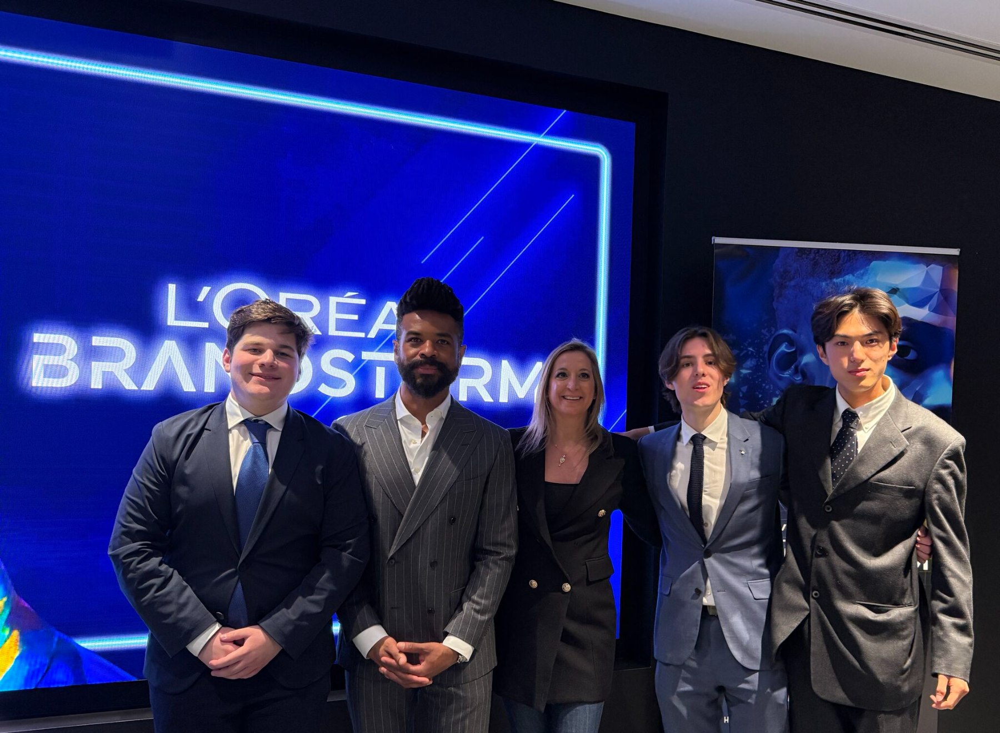
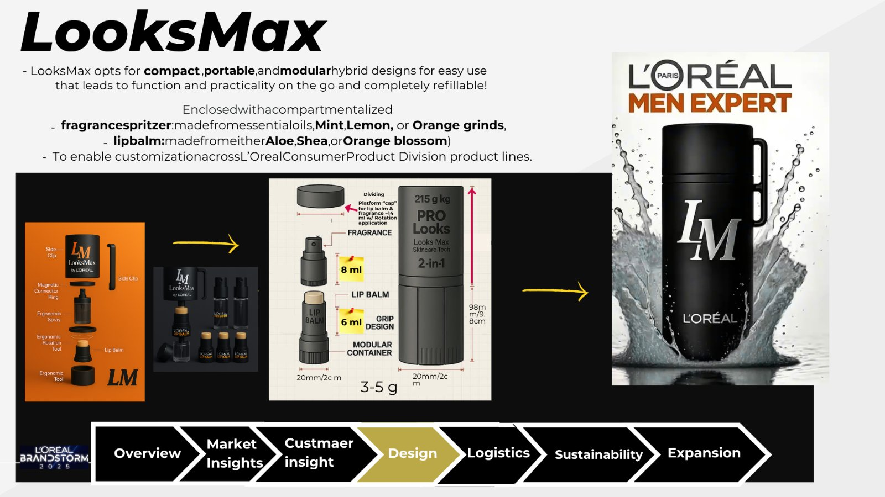
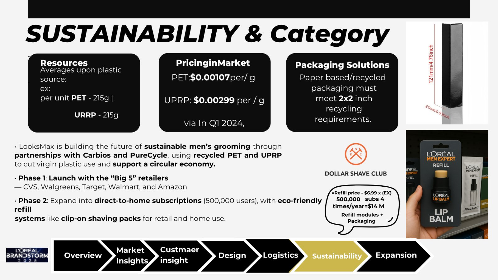
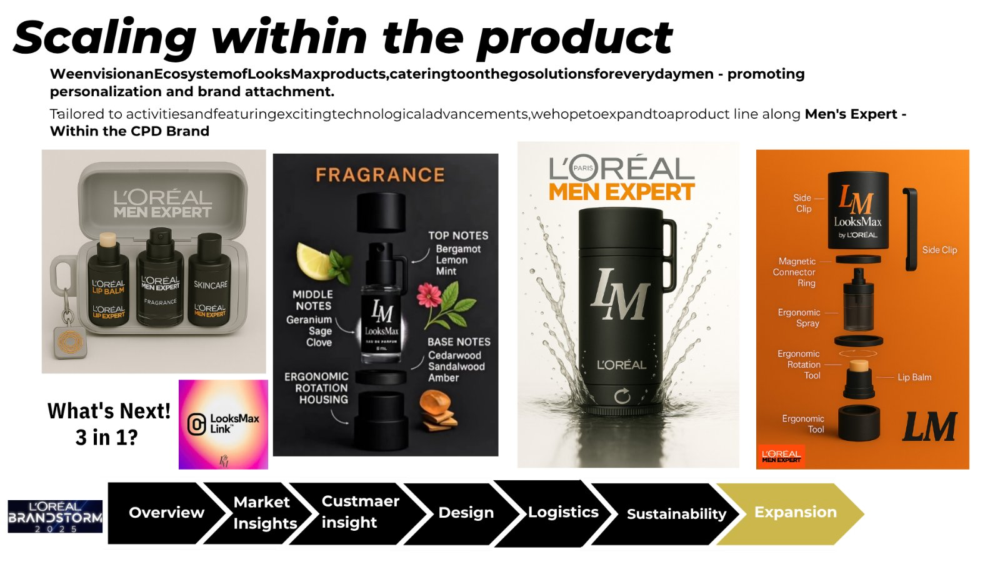

01 / 07 Flagship
LooksMax™
L'Oréal Brandstorm USA Winner
Global Top 10
Co-invented a modular men's grooming device integrating lip care and fragrance, designed for scalable, refill-based consumer use with two teammates from GWU, within L'Oréal Groupe's innovation with 5,000+ consumer research + forecasted 24 M retail store + e-commerce sales.